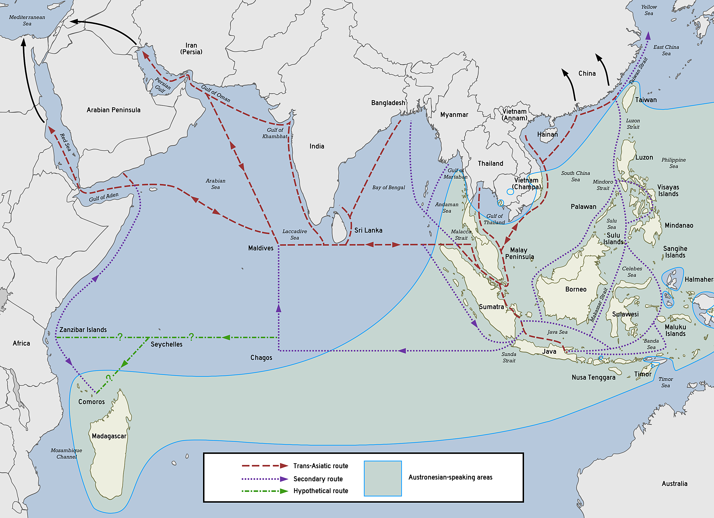
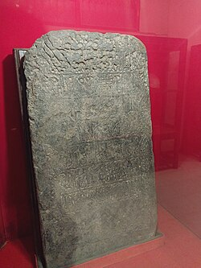

Menelusuri Awal Masuknya Islam di Indonesia
Nur Afni Oktavia
Nisma Gita Paputungan
Anindita Mifta
Rafif Rahidan

Bagaimana Islam pertama kali hadir di Nusantara? Melalui perdagangan, budaya, dan dakwah damai, Islam mulai berkembang di Indonesia sejak abad ke-7 hingga abad ke-12.
Di web ini, kamu diajak mengenal perjalanan awal Islamisasi Nusantara secara ringkas, menarik, dan mudah dipahami. Yuk, jelajahi sejarah yang membentuk identitas Indonesia hingga hari ini!
Abad VII – Masuknya Islam Melalui Teori-teori Sejarah
Masuknya Islam ke Indonesia tidak terjadi secara tiba-tiba dan tidak melalui satu jalur tunggal. Para sejarawan mengemukakan beberapa teori mengenai asal-usul masuknya Islam ke Nusantara. Perbedaan teori ini muncul karena beragamnya sumber sejarah, bukti arkeologis, serta jalur perdagangan yang menghubungkan Indonesia dengan dunia luar sejak awal Masehi.
1. Teori Gujarat

Teori Gujarat merupakan teori yang paling populer dalam kajian sejarah masuknya Islam ke Indonesia. Teori ini menyatakan bahwa Islam dibawa oleh para pedagang Muslim dari wilayah Gujarat, India. Selain melakukan aktivitas perdagangan, para pedagang tersebut juga dipercaya menyebarkan ajaran Islam, khususnya di kawasan Selat Malaka yang merupakan jalur perdagangan internasional yang sangat ramai.
Berdasarkan teori Gujarat, Islam masuk ke Nusantara sejak abad ke-13 Masehi. Teori ini pertama kali diperkenalkan oleh Pijnappel, seorang ilmuwan Belanda, dan kemudian mendapatkan dukungan kuat dari Christian Snouck Hurgronje. Teori ini semakin dikembangkan oleh Moquette pada tahun 1912 melalui kajian arkeologis.
Bukti yang sering dikemukakan untuk mendukung teori ini antara lain penemuan batu nisan Sultan Malik al-Saleh di Pasai, Sumatra Utara. Bentuk dan gaya batu nisan tersebut dinilai memiliki kemiripan dengan batu nisan yang berasal dari Gujarat. Selain itu, terdapat inskripsi tertua yang menunjukkan adanya hubungan dagang antara Sumatra dan Gujarat.
Catatan perjalanan Marco Polo juga menjadi salah satu sumber penting. Marco Polo, seorang penjelajah asal Venesia, Italia, menyebutkan bahwa ketika ia singgah di Pasai, telah ditemukan komunitas Muslim yang cukup berkembang.
Meskipun demikian, teori Gujarat juga mendapatkan kritik. Salah satu kritik utama adalah perbedaan mazhab. Para pedagang Muslim di Gujarat mayoritas menganut mazhab Hanafi, sedangkan masyarakat Pasai menganut mazhab Syafi’i. Bahkan, sebagian sejarawan menyebut bahwa pada masa awal Islam masuk ke Pasai, sebagian besar masyarakat Gujarat masih beragama Hindu.
2. Teori Persia

Teori Persia menyatakan bahwa Islam masuk ke Indonesia sebagai dampak dari hubungan perdagangan dengan pedagang Persia. Indonesia dianggap sebagai wilayah kepulauan yang sangat potensial sebagai tujuan perdagangan. Teori ini menyebut bahwa perkembangan Islam berlangsung antara abad VII hingga abad XIII Masehi.
Pencetus teori Persia adalah Profesor Umar Amir Husein dan Profesor Husein Jayadiningrat. Menurut mereka, Islam pertama kali mendarat di wilayah Sumatra sebelum menyebar ke daerah lain di Nusantara.
Bukti pendukung teori ini ditemukan dalam manuskrip dan tradisi budaya masyarakat. Salah satu bukti paling jelas adalah kesamaan tradisi perayaan. Di Bengkulu terdapat upacara Tabuik yang mirip dengan peringatan Asyura di Persia, yaitu peringatan wafatnya Husein bin Ali, cucu Nabi Muhammad SAW.
Selain itu, terdapat tradisi Maulid Lomponga di Cikoang yang memiliki kemiripan dengan tradisi keagamaan di Persia. Dari sisi arkeologis, bentuk batu nisan Malik al-Saleh juga dinilai mirip dengan batu nisan Maulana Malik Ibrahim.
Bukti lainnya adalah adanya kemiripan kosakata antara bahasa Persia dan bahasa Melayu, yang menunjukkan adanya interaksi budaya dan bahasa antara kedua wilayah tersebut.
3. Teori Cina
Teori Cina menyebutkan bahwa Islam masuk ke Nusantara melalui pedagang Muslim dari Cina. Teori ini berawal dari masa Dinasti Tang (618–905 M), terutama dari daerah Kanton di Cina Selatan yang penduduknya banyak memeluk agama Islam.
Ada pula pendapat yang menyatakan bahwa Islam dibawa oleh panglima Muslim bernama Sa’ad bin Abi Waqqash yang berdakwah pada masa Khalifah Utsman bin Affan. Teori ini kemudian dikembangkan oleh Sumanto Al-Qurthubi.
Menurut Sumanto Al-Qurthubi, penyebaran Islam oleh pedagang Cina dilakukan melalui perkawinan dengan penduduk lokal. Para pendatang Cina Muslim menetap cukup lama di Indonesia sehingga membentuk komunitas Muslim.
Bukti pendukung teori ini antara lain penjelasan Jean A. Berlie yang menyebut adanya komunitas Muslim Cina di Palembang pada tahun 879 M. Komunitas ini diyakini berasal dari migrasi orang-orang Cina dari Kanton ke Asia Tenggara.
Bukti lainnya adalah adanya raja Islam keturunan Tiongkok di Jawa, yaitu Raden Fatah, pendiri dan raja pertama Kerajaan Demak. Selain itu, terdapat kelompok masyarakat pesisir Jawa Timur yang berasal dari Tiongkok dan mayoritas memeluk agama Islam.
Perkembangan Islam di Nusantara pada Abad VIII (700–800 M)
1. Kondisi Dunia Islam pada Abad VIII

Pada abad VIII Masehi:
- Dunia Islam diperintahkan oleh Dinasti Ummayah (hingga 750 M) dan kemudian Abbasiyah
- Islam berkembang cepat secara politik, ekonomi, dan budaya
- Jalur perdagangan darat dan laut makin luas dan teratur
Dampak terhadap Nusantara
Perluasan ekonomi dan jaringan perdaganan menciptakan kontak langsung antar pedagang Muslim dan masyarakat pesisir Nusantara
2. Jalur Perdagangan Nusantara
 Islam masuk ke Nusantara bukan lewat pasukan tetapi lewat jalur perdagangan laut:
- pedagang Muslim dari Arab, Persia, dan Gujarat singgah di pelabuhan Nusantara
- Nusantara menjadi persinggahan strategis karena letaknya di jalur penting antara India-Cina
Pelabuhan yang ramai pada Abad VIII:
-Barus(Sumatra) = terkenal sebagai pusat kapur barus
-Pesisi pantai utara Jawa & Kalimantan = tempat persinggahan kapal dagang
Islam masuk ke Nusantara bukan lewat pasukan tetapi lewat jalur perdagangan laut:
- pedagang Muslim dari Arab, Persia, dan Gujarat singgah di pelabuhan Nusantara
- Nusantara menjadi persinggahan strategis karena letaknya di jalur penting antara India-Cina
Pelabuhan yang ramai pada Abad VIII:
-Barus(Sumatra) = terkenal sebagai pusat kapur barus
-Pesisi pantai utara Jawa & Kalimantan = tempat persinggahan kapal dagang
3. Peranan Kerajaan Sriwijaya
Kerajaan Sriwijaya (Sumatra) pada abad VIII merupakan:
-kerajaan maritim kuat yang menguasai jalur perdagangan Asia Tenggara
-bersikap terbuka terhadap pedagang asing termasuk muslim
Akibatnya: Banyak pedagang Muslim bermukim sementara dan membentuk komunitas Muslim awal dipesisir Nusantara4. Bukti Awal Keberadaan Islam Abad VIII
 a. Catatan Sejarawan Arab
Istilah seperti Zabag atau Sribuza dalam catatan Arab diyakini merujuk kepada Sriwijaya, menunjukan hubungan Nusantara-dunia islam
b. Komunitas Muslim Asing
Pedagang Muslim membentuk desa/komunitas kecil di pelabuhan perdagangan
Jejak Hubungan Dengan Cina
Perdagangan Islam dengan Cina juga melewati jalur Nusantara, sehingga budaya Islam makin dikenal luas
a. Catatan Sejarawan Arab
Istilah seperti Zabag atau Sribuza dalam catatan Arab diyakini merujuk kepada Sriwijaya, menunjukan hubungan Nusantara-dunia islam
b. Komunitas Muslim Asing
Pedagang Muslim membentuk desa/komunitas kecil di pelabuhan perdagangan
Jejak Hubungan Dengan Cina
Perdagangan Islam dengan Cina juga melewati jalur Nusantara, sehingga budaya Islam makin dikenal luas
5. Cara Penyebaran Islam pada Abad VIII
 Penyabaran Islam pada abad ini bersifat:
-Damai dan bertahap
-Melalui intraksi sosial & perdagangan
-Tidak ada penaklukan politik
Penyabaran Islam pada abad ini bersifat:
-Damai dan bertahap
-Melalui intraksi sosial & perdagangan
-Tidak ada penaklukan politik
Pedagang Muslim dikenal memiliki etika dagang yang jujur dan ramah sehingga nilai-nilai Islam mulai diterima oleh masyarakat lokal.
6. Kondisi Masyarakat Nusantara Abad VIII

Pada abad VIII, masyarakat Nusantara masih menganut agama Hindu-Buddha dan kepercayaan lokal. Islam baru dikenal di wilayah pesisir dan penyebarannya masih bersifat non-formal dengan dampak sosial budaya.
Perkembangan Islam di Nusantara pada Abad IX (800–900 M)
1. Kondisi Dunia Islam pada Abad IX
Abad IX Masehi berada dibawah kekuasaan dinasti abbasiyah dengan pusat pemerintahan di bangdad. Pada masa ini, dunia islam mencapai masa keemasan awal dalam bidang.
-Perdagangan internasional
-Ilmu pengetahuan
-Pelayaran
-Administrasi pemerintahan
Islam tidak hanya berkembang sebagai agama, tetapi juga sebagai jaringan ekonomi dan budaya global.
Jalur perdagangan internasional Abad IX.
2. Jalur Perdagangan Internasional Abad IX
-Pada abad IX.
-Jalur perdagangan samudra hindia sangat aktif
-Pedagang muslim dari arab, persia, dan india mendominasi perdagangan laut
-Nusantara menjadi wilayah transit wajib menuju cina
-Islam menyebar bukan lewat penaklukan, tetapi lewat
-Hubungan dagang jangka panjang
p-Etika dagang
-Komunitas pedagang muslim
3. Peta jalur perdagangan samudra hindia

3. Posisi nusantara pada abad IX
-Peran Kerajaan Sriwijaya
Pada abad IX, Sriwijaya berada dipuncak kekuasaan:
-menguasai selat malaka
-menjadi pusat perdagangan internasional
-menjadi tempat singgah pedagang muslim
Sriwijaya bukan kerajaan islam, tetapi:
-memberi ruang bagi komunitas muslim asing
-menjamin keamanan perdagangan
-menjadi penghubung dunia islam dan asia timur
Peta wilayah sriwijaya
4. Bukti Sejarah Abad IX
Beberapa geografer dan penulis muslim abad IX mencatat wilayah asia tenggara, antara lain:
-Ibn Khordadbeh
-Al Ya'qubi
-Sulaiman Al Tajir
Mereka menyebut wilayah:
-Zabag
-Sribuza
ini diyakini sebagai sriwijaya
-Nusantara sudah dikenal luas di dunia islam
-Ada kontak langsung dan rutin
Artefak Perdagangan Islam
salah satu bukti paling kuat islam abad IX adalah koin Dirham Abbasiyah yang ditemukan di Asia Tenggara
Koin Dirham Abbasiyah Abad IX
5. Keberadaan Komunitas Muslim di Nusantara
Pada abad IX:
-Muslim belum menjadi penduduk mayoritas
-Komunitas Muslim terdiri dari:
-pedagang arab
-pedagang persia
-pedagang india muslim
mereka:
-tinggal sementara di pelabuhan
-menikah dengan penduduk lokal (dalam jangka panjang)
-membentuk komunitas kecil
belum ada:
-kerajaan islam
-masjid monumental
-struktur politik islam lokal
ini penting agar tidak terjadi kesalahan sejarah
6. Hubungan Nusantara-Cina-Dunia Islam
Abad IX adalah masa aktif hubungan:
-dunia islam = cina dinasti tang
-nusantara sebagai penghubung utama
catatan cina menyebut:
-adanya pedagang arab muslim
-keberadaan komunitas asing di pelabuhan asia tenggara
7. Cara Penyebaran Islam Abad IX
Islam menyebar melalui:
-perdagangan
-interaksi sosial
-akhlak pedagang muslim
-hubungan ekonomi jangka panjang
Tidak ada:
-penaklukan militer
-pemaksaan agama
islam mulai dikenal sebagai:
-agama pedagang
-agama dengan etika kuat
-agama yang mudah beradaptasi
8. Kesimpulan Abad IX
Abad IX Masehi merupakan fase penguatan penyebaran islam
-islam semakin dikenal luas di nusantara
-komunitas muslim asing mulai stabil
-hubungan dunia islam nusantara tercatat jelas
-menjadi fondasi penting bagi islamisasi abad X-XIII
Namun:
-islam belum menjadi kekuatan politik
-belum ada kerajaan islam lokal
Islam diterima secara bertahap oleh masyarakat pesisir, sementara wilayah pedalaman masih didominasi oleh pengaruh Hindu-Buddha.
Perkembangan Islam di Nusantara pada Abad X (900–1000 M)
1.Kondisi Dunia Islam Abad X
a. Dunia Islam berada di bawah kekuasaan Dinasti Abbasiyah, Baghdad sebagai pusatnya.
b. Abad X disebut juga sebagai masa “Zaman Keemasan Islam” awal.
c. Bidang yang berkembang pesat:
- Ilmu pengetahuan (matematika, astronomi, kedokteran)
- Perdagangan internasional
- Pelayaran dan navigasi
- Administrasi dan budaya
Jalur Perdagangan dan Peran Nusantara
a. Nusantara menjadi jalur penting Samudra Hindia.
b. Pedagang Muslim dari Arab, Persia, dan India berinteraksi langsung dengan penduduk lokal.
c. Pelabuhan strategis
- Barus (Sumatra) contoh: rempah dan kapur barus
- Palembang & Jambi contoh: pusat perdagangan maritim
- Pantai utara Jawa – persinggahan kapal dagang
Bukti Awal Komunitas Muslim di Nusantara
a. Pedagang Muslim membentuk komunitas kecil di pelabuhan.
b. Beberapa bukti sejarah:
- Koin Dirham Abbasiyah & Umayyah ditemukan di Sumatra dan Jawa.
- Catatan Cina (Dinasti Song) menyebut pedagang Arab & Persia di Nusantara.
- Prasasti/kode dagang lokal yang menggunakan penanggalan Islam mulai muncul (walaupun masih jarang).
Perkembangan Kerajaan Sriwijaya Abad X
a. Sriwijaya tetap menjadi penguasa jalur perdagangan maritim.
b. Mulai menerapkan diplomasi dengan pedagang Muslim, memberi izin berdagang dan menetap sementara.
c. Sriwijaya:
- Menjadi pusat akulturasi budaya (Hindu-Buddha + Muslim)
- Mendukung pengiriman biksu dan pelajar ke India dan Cina (Sang Hyang Kamal dan catatan Cina)
a. Islam mulai dikenal secara lokal, terutama di pesisir.
b. Ciri penyebaran:
- Damai, lewat perdagangan dan hubungan sosial
- Komunitas kecil: pedagang Muslim + keluarga lokal
- Belum ada kerajaan Islam lokal, tapi fondasi mulai terbentuk
a. Abad X = hubungan Nusantara dengan Cina (Dinasti Song) semakin intens.
b. Catatan Cina menyebut:
- Pedagang Muslim di pelabuhan Nusantara
- Barang dagangan: rempah, emas, cendana, kain sutra
- Memungkinkan transfer budaya Islam awal
a. Mayoritas masih Hindu-Buddha + kepercayaan lokal.
b. Islam dikenal di pesisir, belum mendominasi.
c. Akulturasi mulai terjadi, misal:
- Nama pedagang/anak pelabuhan memakai nama Arab
- Teknik pelayaran dan kapal mengikuti model Arab-Persia
a. Islam mulai dikenal di pesisir Nusantara, khususnya pelabuhan perdagangan.
b. Belum ada kerajaan Islam, tapi fondasi komunitas Muslim sudah terbentuk.
c. Hubungan ekonomi dan sosial dengan dunia Islam semakin erat.
d. Abad X = masa transisi dari Islam sebagai agama pedagang ke Islam sebagai kekuatan sosial-budaya lokal.
Perkembangan Islam di Nusantara pada Abad XI (1000–1100 M)
Pendahuluan
Abad XI Masehi (1001–1100 M) merupakan periode penting dalam sejarah Islam, baik di dunia Islam secara umum maupun dalam kaitannya dengan perkembangan Islam di Asia Tenggara dan Nusantara. Pada abad ini, Islam tidak hanya berkembang sebagai agama, tetapi juga sebagai peradaban besar yang memengaruhi sistem pemerintahan, perdagangan, ilmu pengetahuan, dan budaya.
Berbeda dengan masa sebelumnya yang lebih berfokus pada ekspansi dan konsolidasi kekuasaan, abad XI ditandai oleh perubahan struktur politik, kebangkitan pusat-pusat kekuasaan baru, serta semakin kuatnya jaringan perdagangan internasional yang berperan besar dalam penyebaran Islam ke wilayah Nusantara.
1. Kondisi Dunia Islam pada Abad XI
a. Kemunduran Kekuasaan Abbasiyah
Pada abad XI, Dinasti Abbasiyah yang berpusat di Baghdad masih diakui sebagai pemimpin simbolis umat Islam, namun kekuasaan politiknya telah melemah.
- Khalifah Abbasiyah lebih berperan sebagai pemimpin agama daripada penguasa politik nyata.
- Kekuasaan administratif dan militer diambil alih oleh dinasti-dinasti lain, terutama Dinasti Seljuk
- Meskipun lemah secara politik, Baghdad tetap menjadi pusat ilmu pengetahuan dan kebudayaan Islam.
b. Bangkitnya Dinasti Seljuk
Dinasti Seljuk (bangsa Turki Muslim) menjadi kekuatan besar pada abad XI.
- Seljuk menguasai wilayah Persia, Irak, hingga Asia Kecil.
- Mereka mendukung kekhalifahan Abbasiyah dan berperan sebagai pelindung politik dan militer.
- Pada masa ini, madrasah-madrasah berkembang pesat, termasuk Madrasah Nizamiyah.
c. Peran Seljuk sangat penting dalam:
- Menegakkan kembali Sunni Islam
- Mengembangkan pendidikan Islam formal
- Menyebarkan stabilitas di jalur perdagangan
Perkembangan Ilmu Pengetahuan dan Kebudayaan Islam
Abad XI dikenal sebagai masa kejayaan intelektual Islam.
a. Bidang Pendidikan
b. Sistem madrasah berkembang luas.
c. Kurikulum mencakup:
- Ilmu agama (fikih, tafsir, hadis)
- Ilmu rasional (matematika, astronomi, filsafat, kedokteran)
b. Tokoh Penting Abad XI
Beberapa tokoh besar abad XI antara lain:
Imam Al-Ghazali (1058–1111 M)
a. Ulama besar dalam bidang teologi dan tasawuf
b. Karyanya Ihya’ Ulumuddin sangat berpengaruh
c. Berhasil mengintegrasikan syariat dan tasawuf
d. n dan filsafat
e. Karyanya Al-Qanun fi al-Tibb digunakan di Eropa berabad-abad
Ibnu Sina (Avicenna)(pengaruhnya masih kuat hingga abad XI)
a. Tokoh kedokteran dan filsafat
b. Karyanya Al-Qanun fi al-Tibb digunakan di Eropa berabad-abad
3. Perdagangan Internasional dan Jalur Penyebaran Islam
a. Jalur Perdagangan Samudra Hindia
Abad XI merupakan masa sangat aktifnya perdagangan internasional:
Jalur utama:
- Timur Tengah → India → Asia Tenggara → Cina
- Komoditas utama:
- Rempah-rempah
- Emas
- Kain
- Keramik
Pedagang Muslim:- Berasal dari Arab, Persia, dan India
- Tidak hanya berdagang, tetapi juga menyebarkan Islam melalui interaksi sosial
b. Peran Pedagang Muslim
Pedagang Muslim memiliki ciri khas:
- Jujur dalam berdagang
- Menjalin hubungan pernikahan dengan penduduk lokal
- Mendirikan komunitas Muslim di pelabuhan-pelabuhan
Pada abad XI, bukti fisik keberadaan Islam di Nusantara mulai ditemukan secara lebih jelas. Salah satu bukti paling penting adalah ditemukannya makam Fatimah binti Maimun di Leran, Gresik, yang bertahun 1082 M.
4. Perkembangan Islam di Nusantara pada Abad XI
1. Awal Penguatan Komunitas Muslim
Pada abad XI:
a.Islam belum menjadi agama mayoritas di Nusantara
b. Namun, komunitas Muslim sudah mulai menetap secara permanen
c. Islam berkembang terutama di:
- Pesisir Sumatra
- Pantai utara Jawa
- Wilayah perdagangan strategis
2. Bukti Sejarah
Beberapa bukti penting keberadaan Islam di Nusantara abad XI:
a.Batu nisan Fatimah binti Maimun (1082 M) di Leran, Gresik
- Menjadi bukti arkeologis penting
- Menunjukkan keberadaan komunitas Muslim di Jawa Timur
5. Metode Penyebaran Islam di Nusantara
Islam pada abad XI berkembang melalui beberapa cara utama:
a. Perdagangan
- Sarana utama penyebaran
- Pedagang menjadi da’i tidak resmi
b. Sosial dan Budaya
- Pernikahan campuran
- Adaptasi dengan budaya lokal
- Penyebaran nilai Islam tanpa menghilangkan tradisi setempat
c. Tasawuf
- Ajaran tasawuf mudah diterima masyarakat
- Menekankan akhlak, spiritualitas, dan keteladanan
6. Dampak Abad XI terhadap Perkembangan Islam Selanjutnya
Abad XI menjadi fondasi penting bagi perkembangan Islam di Nusantara pada abad-abad berikutnya.
Dampaknya antara lain:
a. Terbentuknya komunitas Muslim yang stabil
b. Islam mulai diterima oleh elite lokal
c. Membuka jalan bagi lahirnya:
- Kerajaan Samudra Pasai (abad XIII)
- Kerajaan Islam di Jawa dan wilayah lain
Penutup
Abad XI merupakan masa transisi dan penguatan dalam sejarah Islam. Di tingkat global, dunia Islam mengalami perkembangan ilmu pengetahuan dan kebudayaan yang luar biasa. Sementara itu, di Nusantara, Islam mulai mengakar secara sosial dan kultural, terutama melalui perdagangan dan interaksi damai.
Perkembangan pada abad ini menjadi dasar kuat bagi Islamisasi Nusantara di abad-abad selanjutnya.
4. Perkembangan Komunitas Muslim
Komunitas Muslim pada abad XI berkembang lebih terorganisir. Mereka mulai membentuk struktur sosial berbasis ajaran Islam, meskipun masih hidup berdampingan dengan masyarakat Hindu-Buddha.
Toleransi antarumat beragama menjadi ciri penting kehidupan sosial pada masa ini.
5. Pola Islamisasi Abad XI

Islamisasi pada abad XI berlangsung secara damai dan bertahap. Islam diterima sebagai agama yang mampu menyesuaikan diri dengan budaya lokal tanpa menghilangkan identitas masyarakat Nusantara.
Perkembangan Islam di Nusantara pada Abad XII (1100–1200 M)
1. Kondisi Umum Abad XII
Abad XII merupakan periode penting dalam sejarah Islamisasi Nusantara. Pada masa ini, Islam tidak lagi hanya dikenal di wilayah pesisir, tetapi mulai menyebar ke wilayah yang lebih luas.
Secara global, dunia Islam menghadapi tantangan seperti Perang Salib, namun aktivitas perdagangan dan penyebaran agama tetap berlangsung.
2. Peran Ulama dan Tasawuf
Salah satu faktor utama keberhasilan Islamisasi pada abad XII adalah peran ulama dan ajaran tasawuf. Tasawuf menawarkan pendekatan spiritual yang mudah diterima oleh masyarakat Nusantara yang sebelumnya memiliki tradisi mistik dan kepercayaan lokal.
Para sufi menyampaikan ajaran Islam melalui dakwah yang lembut, simbolik, dan penuh toleransi.
3. Islam dan Budaya Lokal
Pada abad XII, Islam berkembang melalui proses akulturasi budaya. Nilai-nilai Islam disampaikan tanpa menghapus tradisi lokal, melainkan memberikan makna baru yang sejalan dengan ajaran Islam.
Hal ini menyebabkan Islam diterima secara luas oleh masyarakat tanpa konflik sosial yang berarti.
4. Perluasan Wilayah Islam
Islam pada abad XII mulai menjangkau wilayah pedalaman. Meskipun pusat-pusat Islam masih berada di pesisir, pengaruhnya mulai terasa di daerah-daerah non-pesisir.
Hubungan antara pedagang, ulama, dan masyarakat lokal menjadi kunci utama perluasan wilayah Islam.
5. Dampak Sosial dan Keagamaan
Islam mulai membentuk pola kehidupan sosial masyarakat. Nilai-nilai seperti keadilan, persaudaraan, dan kesetaraan mulai diterapkan dalam kehidupan sehari-hari.
Abad XII menjadi masa transisi menuju terbentuknya kekuatan politik Islam di Nusantara.
Perkembangan Islam di Nusantara pada Abad XIII (1200–1300 M)
1. Kondisi Umum Abad XIII
Abad XIII Masehi merupakan fase percepatan Islamisasi di Nusantara. Pada periode ini, Islam tidak hanya berkembang sebagai agama, tetapi juga sebagai kekuatan sosial dan politik. Proses penyebaran Islam yang telah berlangsung sejak abad-abad sebelumnya mencapai puncaknya.
Jalur perdagangan laut Samudra Hindia tetap menjadi sarana utama penyebaran Islam. Hubungan dagang yang intensif antara Nusantara dengan dunia Islam mendorong terbentuknya pusat-pusat kekuasaan Islam.
2. Berdirinya Kerajaan Islam Awal
Salah satu peristiwa terpenting pada abad XIII adalah berdirinya kerajaan Islam pertama di Indonesia, yaitu Kerajaan Samudera Pasai di pesisir utara Sumatra.
Kerajaan ini berkembang sebagai pusat perdagangan dan penyebaran Islam. Sultan Malik al-Saleh dikenal sebagai raja Islam pertama di Nusantara.
3. Peran Ulama dan Pedagang
Pada abad XIII, ulama dan pedagang memiliki peran yang sangat besar dalam penyebaran Islam. Ulama berperan dalam pendidikan dan dakwah, sedangkan pedagang memperkuat jaringan ekonomi dan sosial.
Kombinasi antara kekuatan spiritual dan ekonomi membuat Islam berkembang pesat dan diterima oleh berbagai lapisan masyarakat.
4. Islam sebagai Kekuatan Sosial-Politik
Islam pada abad XIII mulai membentuk sistem pemerintahan dan hukum. Nilai-nilai Islam diterapkan dalam kehidupan bernegara dan bermasyarakat.
Kerajaan-kerajaan Islam selanjutnya berkembang di berbagai wilayah Nusantara, menjadi cikal bakal peradaban Islam Indonesia.
5. Dampak Jangka Panjang
Perkembangan Islam pada abad XIII memberikan dampak besar bagi sejarah Indonesia. Islam menjadi agama mayoritas dan membentuk identitas budaya serta sosial masyarakat.
Periode ini menandai berakhirnya fase awal Islamisasi dan dimulainya era kerajaan-kerajaan Islam di Nusantara.